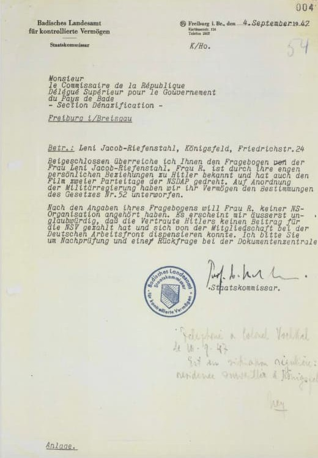
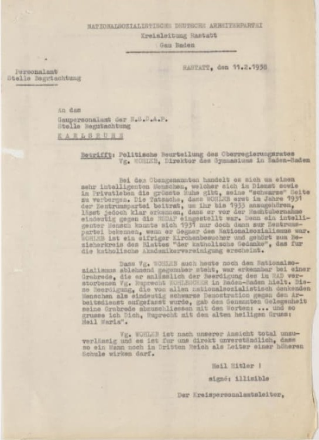
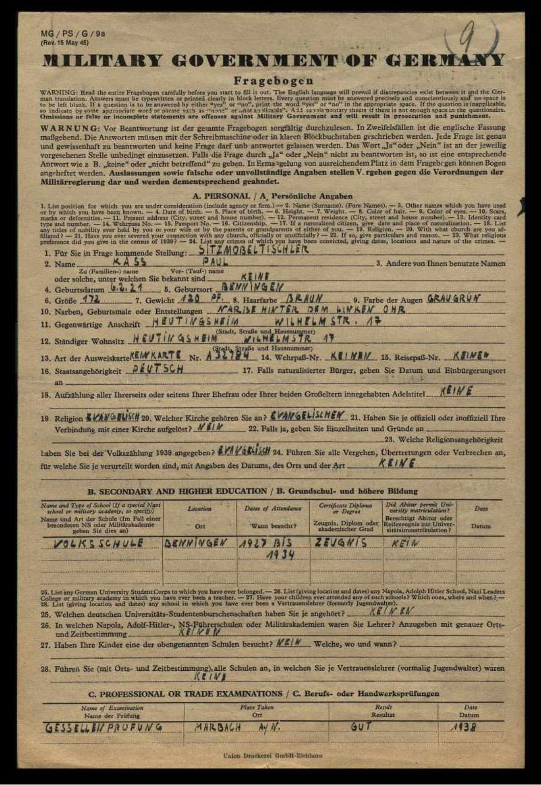
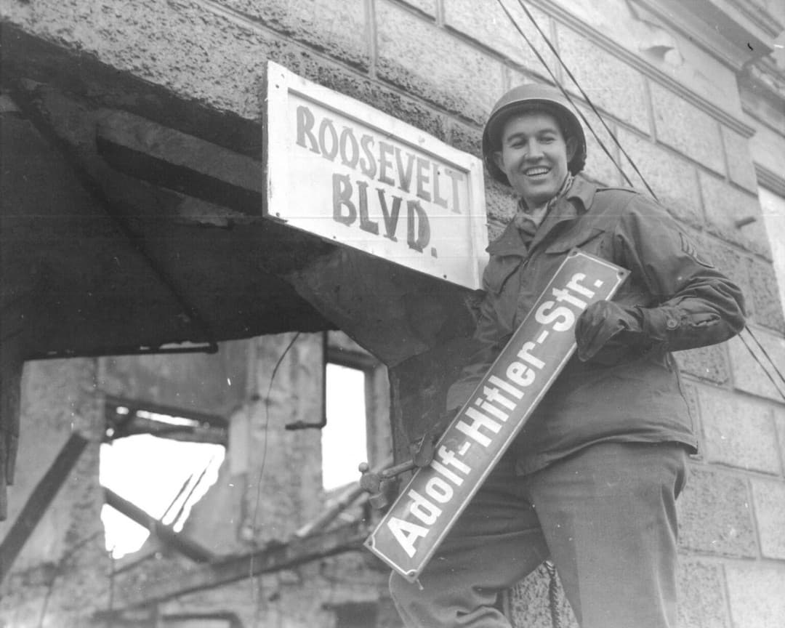
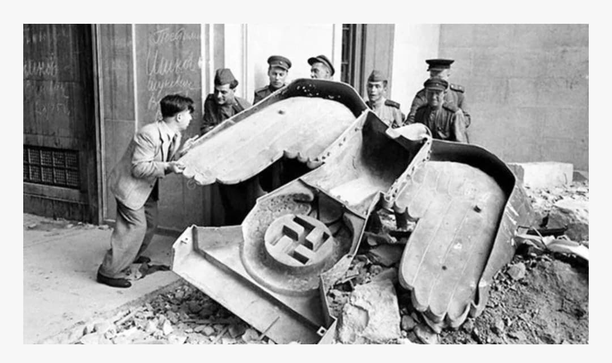
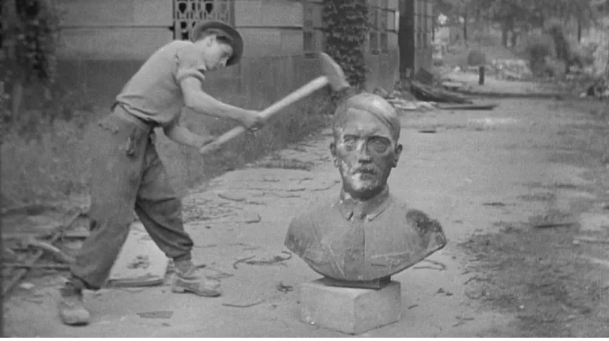

Introduction
Après la capitulation de mai 1945, les puissances alliées mettent en place un vaste programme de dénazification. Son objectif : éliminer l’influence du régime nazi dans la société allemande, juger les responsables, retirer les anciens nazis des postes de pouvoir et reconstruire un État fondé sur des valeurs démocratiques.
La dénazification touche tous les domaines : administration, justice, police, enseignement, économie, médias, culture. Elle s’appuie sur des questionnaires, des commissions, des procès et la destruction des symboles du régime.
Documents de dénazification
Les autorités alliées examinent des millions de dossiers pour déterminer le degré d’implication de chaque individu dans le régime nazi. Les documents que tu vois ci‑dessous sont authentiques : décisions administratives, évaluations politiques et questionnaires obligatoires.



Le Fragebogen est un questionnaire obligatoire rempli par des millions d’Allemands. Il permet aux Alliés de classer chaque personne : grands coupables, coupables, moins coupables, suiveurs ou exonérés.

La dénazification est un travail administratif colossal. Des salles entières sont remplies de dossiers, examinés un par un par les commissions alliées.
La disparition des symboles nazis
La dénazification passe aussi par l’effacement des symboles visibles du régime : plaques de rues, statues, aigles impériaux, bustes du dictateur, emblèmes et décorations.



Les procès de Nuremberg
Les procès de Nuremberg (1945–1946) jugent les principaux dirigeants nazis pour crimes de guerre et crimes contre l’humanité. Ils posent les bases du droit international moderne et de la notion de responsabilité individuelle.
La photo des accusés dans le box, utilisée en HERO, symbolise la volonté des Alliés de rendre justice et de montrer que le régime nazi ne restera pas impuni.
Héritage et limites
La dénazification est un processus complexe. Beaucoup de personnes classées comme « suiveurs » réintègrent rapidement la vie professionnelle. Malgré ses limites, elle marque une étape essentielle dans la reconstruction d’une Allemagne démocratique.
Page du Musée HOP WW2 – Section Dénazification